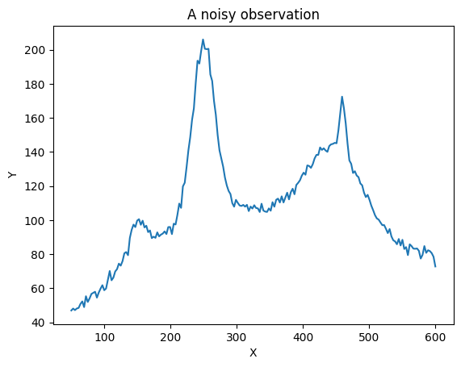
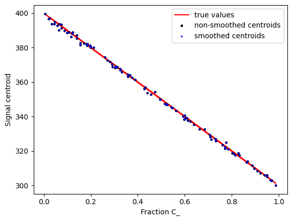
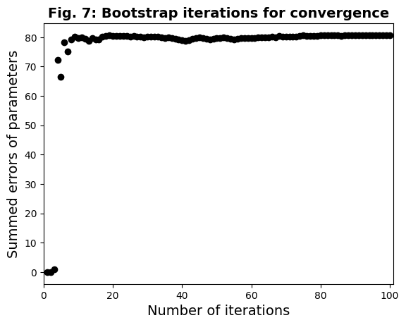
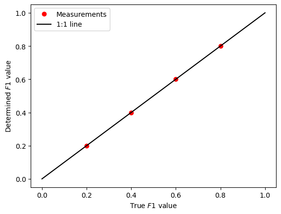
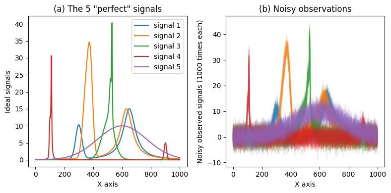
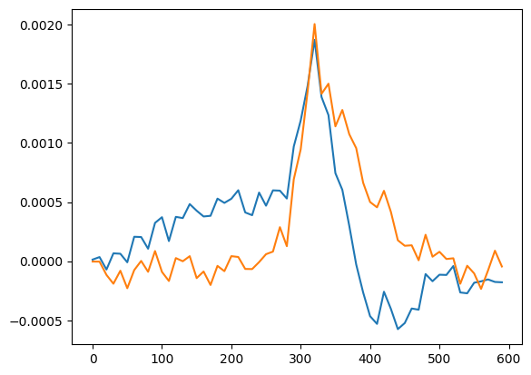
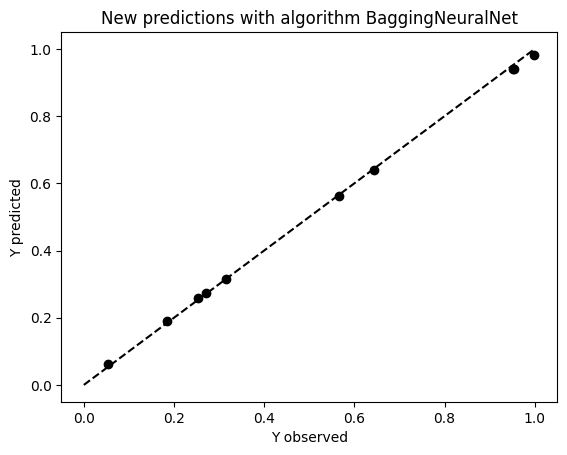
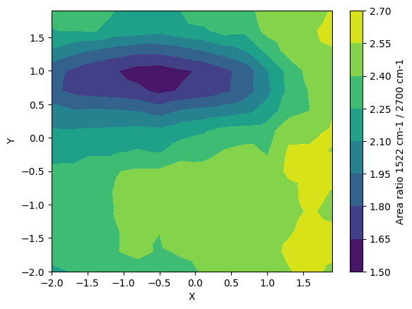

RamPy
Contents:
Philosophy
Rampy News
Installation
First Steps
Preprocessing
Baseline
Smoothing and filtering
Plotting
Signal parameters
Peak fitting
Machine learning
Maps
Diamond Anvil Cell Utilities
Example notebooks
Processing
Use of normalisation function
Smooth a signal
Figures
Example: fit a baseline
Automatic selection of smoothing coefficient for GCV spline
Baseline removal and Centroid measurement
Problem definition
Baseline fit
Centroid determination
Peak fitting
Peak fitting with LMfit
Importing and looking at the data
Fitting
Error estimations
Conclusion
Machine learning
Mixing endmember spectra
Machine learning classification
Example of use of the mlexplorer() function
ML regression with rampy.ml_regressor
Maps
Example: Maps tool of RamPy
Utilities
rampy API
RamPy
Example notebooks
View page source
Example notebooks
Processing
Use of normalisation function

Smooth a signal
Example: fit a baseline

Baseline removal and Centroid measurement
Peak fitting

Peak fitting with LMfit
Machine learning

Mixing endmember spectra

Machine learning classification

Example of use of the mlexplorer() function

ML regression with rampy.ml_regressor
Maps

Example: Maps tool of RamPy